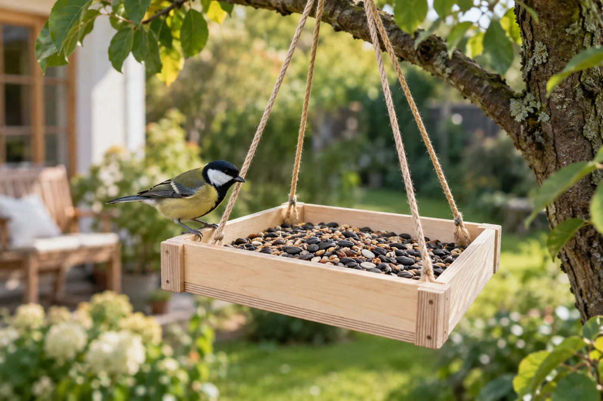
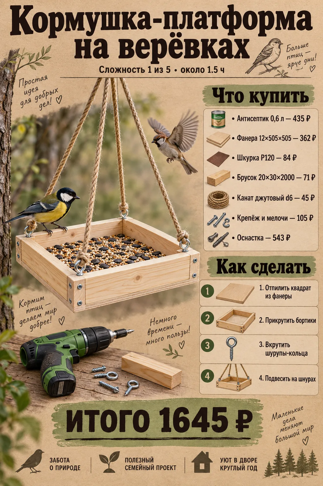
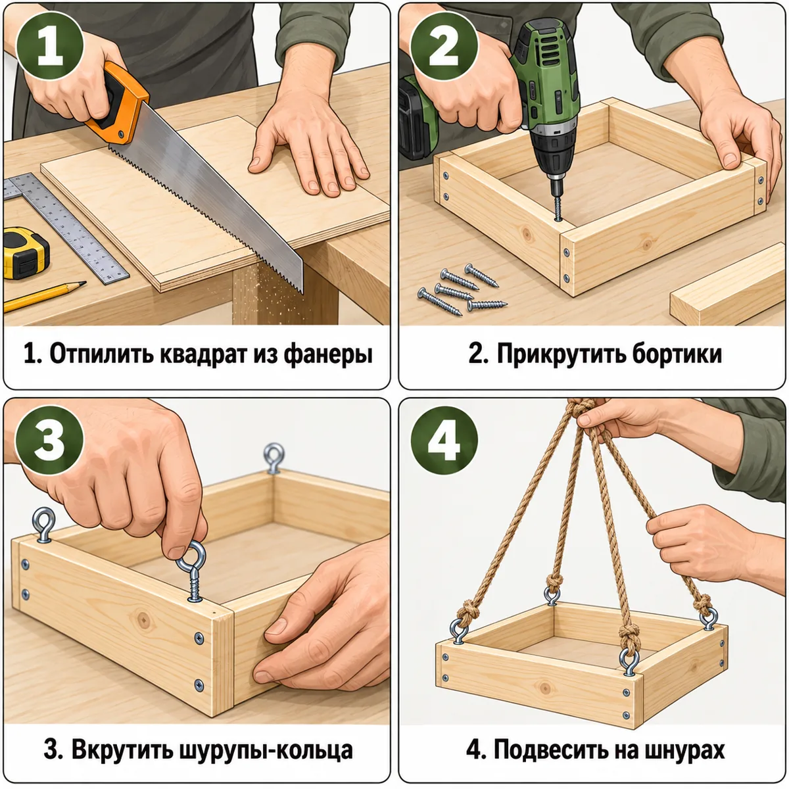

Открытый лоток для семечек на четырёх шнурах — вешается на ветку. Самый быстрый проект на вечер.


| Позиция | Зачем | Кол-во | Цена | Сумма |
|---|---|---|---|---|
| материал | ||||
| Фанера 12×505×505 Фанера ФК 12х505х505 мм сорт 3/4 шлифованная · арт. 634466 |
фанера 12×505×505 | 1 л. | 362 ₽ | 362 ₽ |
| Брусок 20×30×2000 Брусок сухой строганый 20х30х2000 мм сорт АВ хвойные породы ФГИС ЛК · арт. 626001 |
брусок 20×30×2000 | 1 шт | 71 ₽ | 71 ₽ |
| Канат джутовый d6 Канат крученый джутовый 3 пряди d6 мм · арт. 128606 |
джутовый канат d6, 3 м | 3 пог. м | 15 ₽ | 45 ₽ |
| крепёж | ||||
| Саморезы 32 мм Саморезы ГД 32x3,5 мм (30 шт.) · арт. 125768 |
саморезы 32 мм | 1 упак | 37 ₽ | 37 ₽ |
| Шурупы-кольца Шуруп-кольцо 3,5x30 мм (4 шт.) · арт. 127618 |
шурупы-кольца (4 шт.) | 1 упак | 38 ₽ | 38 ₽ |
| отделка | ||||
| Антисептик 0,6 л Антисептик Dali универсальный биозащитный 0,6 л бесцветный · арт. 1098347 |
антисептик | 1 шт | 435 ₽ | 435 ₽ |
| расходник | ||||
| Карандаш Карандаш строительный малярный Hesler (2 шт.) · арт. 125418 |
карандаш | 1 упак | 30 ₽ | 30 ₽ |
| Шкурка P120 Наждачная бумага Flexione 230х280 мм Р120 влагостойкая · арт. 691898 |
шкурка P120 | 2 шт | 42 ₽ | 84 ₽ |
| оснастка | ||||
| Бита PH2 Бита Hesler PH2 магнитная 25 мм (882083) · арт. 882083 |
бита PH2 под саморезы | 1 шт | 33 ₽ | 33 ₽ |
| Сверло 3 мм Сверло по дереву спиральное КМ 3х60 мм (966064) · арт. 966064 |
сверло 3 мм: засверловка, чтобы доска не треснула | 1 шт | 42 ₽ | 42 ₽ |
| Ножовка по дереву Ножовка по дереву 400 мм 9 зуб/дюйм средний зуб · арт. 681543 |
ножовка по дереву | 1 шт | 226 ₽ | 226 ₽ |
| Стусло Стусло Сибртех пластиковое 300х65 мм (22571) · арт. 968520 |
стусло: ровный рез 90° и 45° | 1 шт | 143 ₽ | 143 ₽ |
| Рулетка Рулетка с фиксатором 3 м x 16 мм · арт. 159373 |
рулетка | 1 шт | 99 ₽ | 99 ₽ |
| Итого, включая оснастку 543 ₽ | 1645 ₽ | |||
Источник идеи: https://media.halvacard.ru/dacha/iz-chego-i-kak-sdelat-kormushku-dlya-ptic-svoimi-rukami-d. Проект переработан под шуруповёрт 12 В и ручной инструмент.